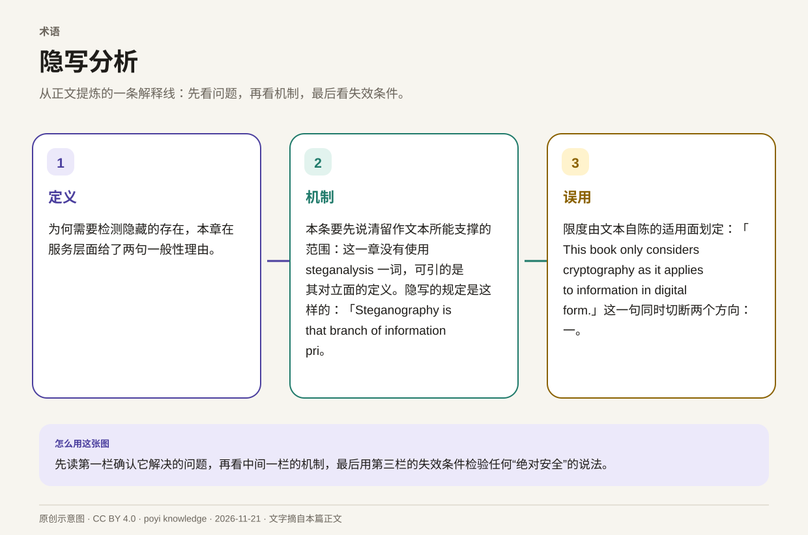

原理与机制
术语：隐写分析（Steganalysis）。

为什么重要
为何需要检测隐藏的存在，本章在服务层面给了两句一般性理由。其一是把侦测纳入学科本身：「Cryptography is about the prevention and detection of cheating and other malicious activities.」即预防与检测并列，隐藏通信的检测因此属于同一问题域，而非另属他科。其二是把检测写成完整性服务的前提：「To assure data integrity, one must have the ability to detect data manipulation by unauthorized parties.」两句共同支撑该条目：只要未被察觉的增删替换足以破坏完整性，判定隐藏存在与否的能力就是服务的前提条件。需要区分的是，这两句说的是未经授权的改动与恶意行为，并未专指隐写载体，故本章为隐写分析提供的是问题定位，不是任务规格。
应用与实例
留存的用法只到问题归类为止。注释先列物理手段：「Physical means of providing privacy include fiber optic communication links, spread spectrum technology, TEMPEST techniques,」其句收在「tamper-resistant hardware.」；隐写不在这一串清单之内，同段紧随的下一句另把它定义为信息隐私的一个分支（该条目 principle 段所引），隐形墨水、秘密夹层与次限信道是该分支自身的设备。即本章把隐蔽处理安放在物理手段清单之后的单独一句里，而对应的分析手段没有清单。另一处用法是目标划分：「it was realized that secrecy and authentication were truly separate and independent information security objectives.」两句合起来决定隐写分析在本章中的可用方式：它可作为保密性之外的第三问（是否根本存在一条消息）被提出，并可借助扩展频谱与 TEMPEST 一类并置手段作类比；但本章不含图像载体、统计检验或检测率的任何应用实例，因此不得把上述并置当作方法依据。
边界与攻击面
限度由文本自陈的适用面划定：「This book only considers cryptography as it applies to information in digital form.」这一句同时切断两个方向：一是隐形墨水与秘密夹层之类非数字载体，本章只在注释里列举其名；二是数字隐写的检测问题，本章既未定义也未给出任何检验流程。加之该节的文献指针指向史料而非方法，「Kahn [648] provides an historical account of various steganographic techniques.」故该条目的结论是证据边界而非学科边界：留存文本能说明隐写所遮蔽的是数据的存在，不能说明如何判定其存在；任何检测效能、误报率或针对具体载体的分析结论，均超出这一份副本所能引证的范围。
历史与背景
史料线索在本章以指针形式出现：「Kahn [648] provides an historical account of various steganographic techniques.」该句位于章末注释，把隐形墨水、秘密夹层与次限信道一类手段的沿革交给另一部著作，而这句话本身没有为它点名的那些手段补上任何年份。副本的版本事实写在题头行：「This is a Chapter from the Handbook of Applied Cryptography, by A.Menezes, P.van Oorschot, and S.Vanstone, CRC Press, 1996.」即这份单章文本标注 1996 年，且明言是手册的一章。两条合起来只够说明这份副本自身的写法：章末注释另起一句把隐写定义为信息隐私的一个分支，并把次限信道列为该分支的设备之一，而非把隐写列入提供隐私的物理手段清单，作证的是该句本身「Steganography is that branch of information privacy which attempts to obscure the existence of data through such devices as invisible inks, secret compartments, the use of subliminal channels, and the like.」；全章没有使用 steganalysis 一词，故本副本未为该词留下条目或定义。这只是一份单章文本的写法，不足以断言 1996 年整个领域的状况。这份副本印出的年份说的是副本自己与其他书：题头行印着 1996，一行把 1997 年列为 CRC Press 版权年的说明在这份副本里出现 25 次，而与本章第一节绑定的注释给出 1967 年——那是 Kahn 那部密码学通史出版的年份。这三个年份都不说明 steganalysis 一词何时开始使用，本章也没有任何句子能为它断代。
逐步示例与核验
定义检查模型
上位概念 → 区别特征 → 正例 → 反例 → 易混边界。正例必须落在外延内；反例必须刚好跨过边界；同义词不能代替定义。
参考出处
- Wikipedia search entry for 隐写分析. https://zh.wikipedia.org/w/index.php?search=%E9%9A%90%E5%86%99%E5%88%86%E6%9E%90
- RFC 4949: Internet Security Glossary, Version 2. https://www.rfc-editor.org/rfc/rfc4949